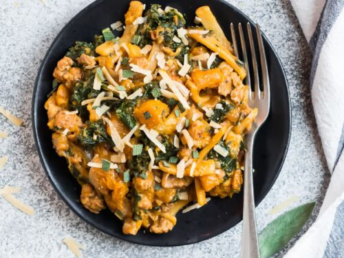

Butternut Squash and Sage Pasta

Ingredients:
- 8 oz. pasta (your choice)
- 2 cups butternut squash (peeled, seeded, and diced)
- 2 tablespoons olive oil
- 1/4 cup fresh sage leaves
- 2 cloves garlic (minced)
- 1/2 cup Parmesan cheese (grated)
- Salt and pepper to taste
- Crushed red pepper flakes (optional)
Instructions:
- Cook pasta according to package instructions; drain and set aside.
- In a large skillet, heat olive oil over medium heat.
- Add diced butternut squash and cook until tender and slightly caramelized.
- Add minced garlic and fresh sage leaves to the skillet; sauté until fragrant.
- Combine cooked pasta with the butternut squash mixture in the skillet.
- Season with salt, pepper, and crushed red pepper flakes (if using).
- Sprinkle grated Parmesan cheese over the pasta and toss until well combined.
- Serve hot, garnished with additional Parmesan and sage leaves if desired.